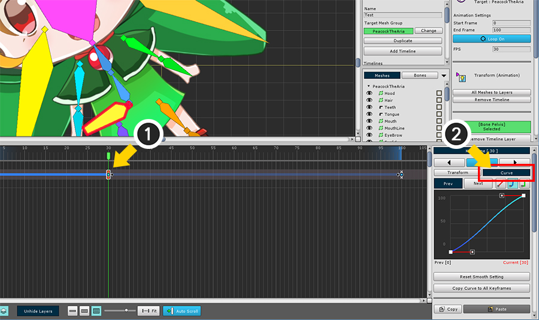
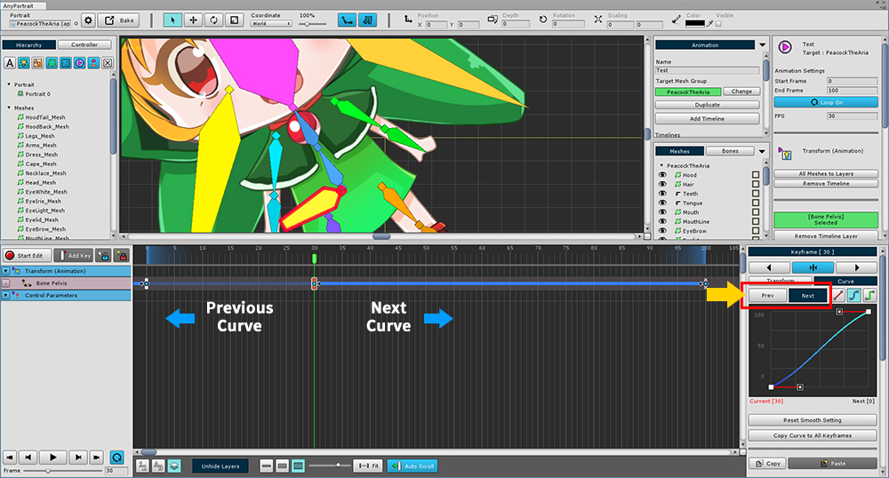
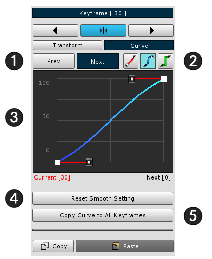
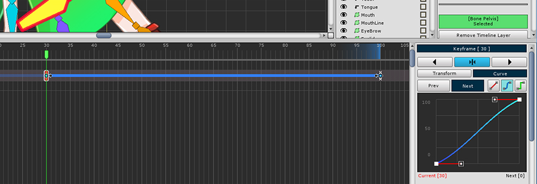
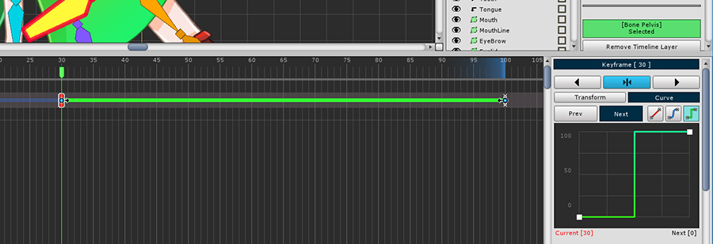
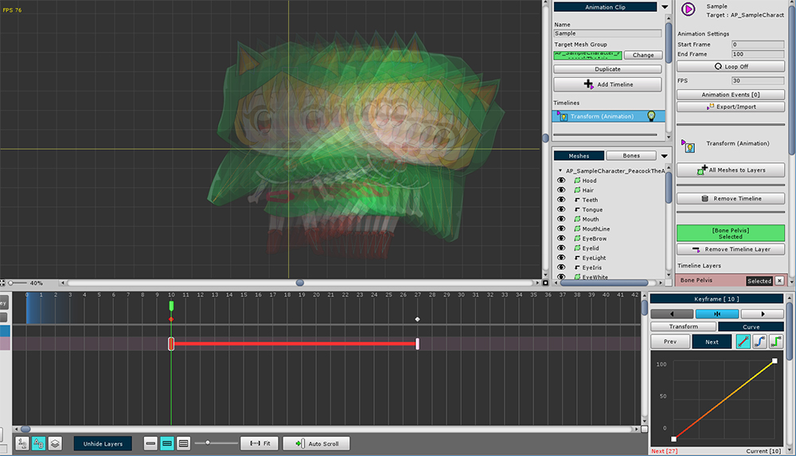
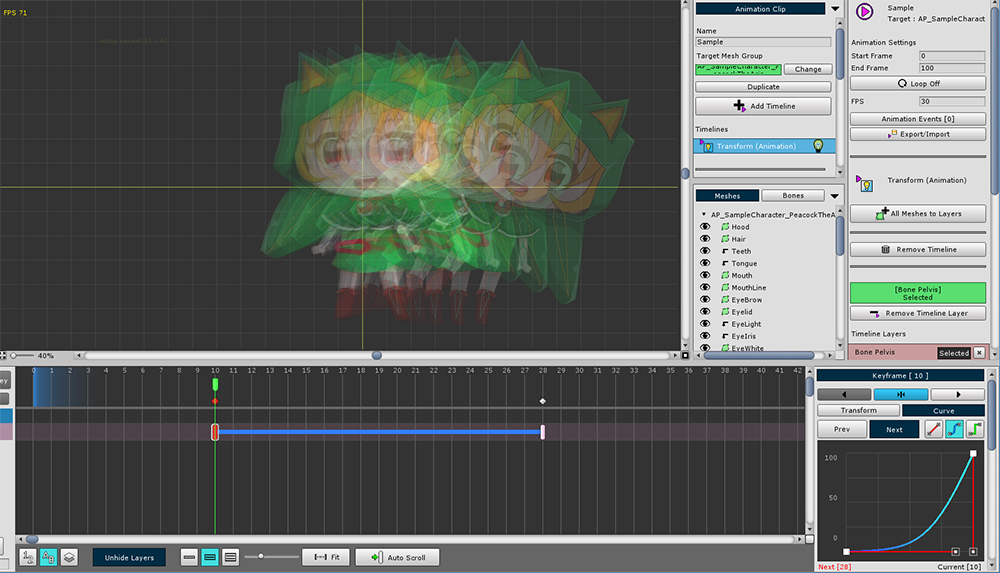
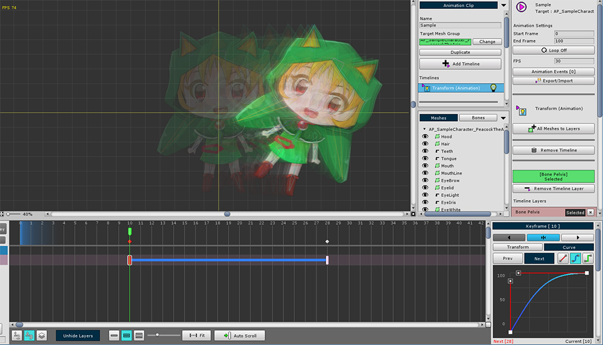
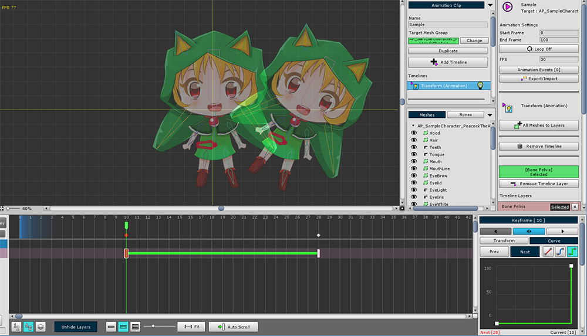

AnyPortrait > 入門ガイド > 2.8. アニメーション曲線
2.8. アニメーション曲線
1.0.0
キーフレームアニメーションを理解する際には、「補間(Interpolation)」が最も重要な原則です。
補間は、キーフレームとキーフレームの間でどのような形式をとるかを計算するプロセスです。
補間方法によっては、同じキーフレームでもアニメーションの結果が異なる場合があります。
このページでは、補間方法を扱う「アニメーション曲線(Animation Curve)」について説明します。

(1) キーフレームを1つ選択し、(2) 「Curve」タブを選択します。
アニメーションカーブを変更すると、カーブのタイプがタイムラインワークスペースに太い線として表示されます。

前のキーフレームの「前のカーブ (Previous Curve)」を選択し、次のキーフレームの「次のカーブ (Next Curve)」を選択することもできます。
選択したカーブはタイムラインワークスペースで明るく表示されます。

左はアニメーション曲線の詳細プロパティUI。
1. Prev/Next : 前のカーブまたは次のカーブを選択します。
2. 曲線のタイプ : カーブの補間方法を決定します。 それらは「Linear」、「Smooth」、および「Constant」です。
3. 曲線を編集する : カーブを編集または表示できます。 「Smooth」メソッドの場合、コントロールポイントを編集することができます。
4. Reset Smooth Setting : 「Smooth」メソッドの場合、コントロールポイントは初期値に戻ります。
5. Copy Curve to All Keyframes : タイムラインレイヤのすべてのキーフレームに現在のカーブ設定を適用します。
6. Copy / Paste : 一時的にキーフレーム情報をコピーまたは貼り付けます。
7. Export / Import : 骨アニメーションのキーフレームである場合、姿勢を保存したり、開くことができます。
8. Remove the keyframe
アニメーションは、カーブの計算方法の種類によって処理が異なります。

1. Linear
ムーブメントやサイズなどは一律に変更されます。

2. Smooth
動き、サイズがスムーズに変化します。
ユーザーはカーブの形状を編集できます。
加速を与えたり、キーフレームからスムーズに切り替えるときに適しています。

3. Constant
値はキーフレーム間のエンドポイントで変更されます。
スプライトアニメーションのような効果を与えることができます。
曲線の種類によって実際にどのように変化するかを見てみましょう。

1. Linear
曲線の色は「赤」です。
最初から最後まで定期的に変化することがわかります。
2. Smooth
カーブの色は「青」です。
デフォルトの状態は「Linear」に似ていますが、開始時と終了時にいくつかの加速と減速があります。

2-1. 加速された Smooth
「Smooth」曲線の変形例。
開始キーフレーム値に近づき、加速して素早く変化します。

2-2. 減速された Smooth
「Smooth」曲線の変形例。
開始キーフレームの速度変化を確認してから減速します。

3. Constant
曲線の色は「緑」です。
補間状態は開始と終了の2つしかありません。
これはエンドポイント上で変換されます。